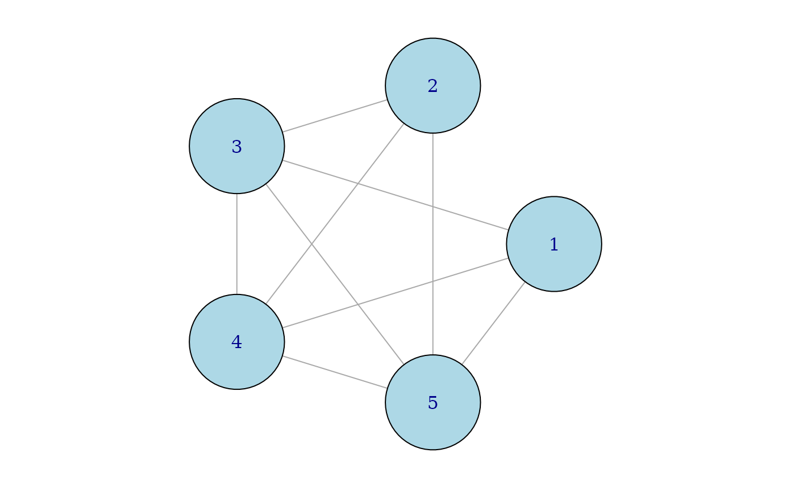
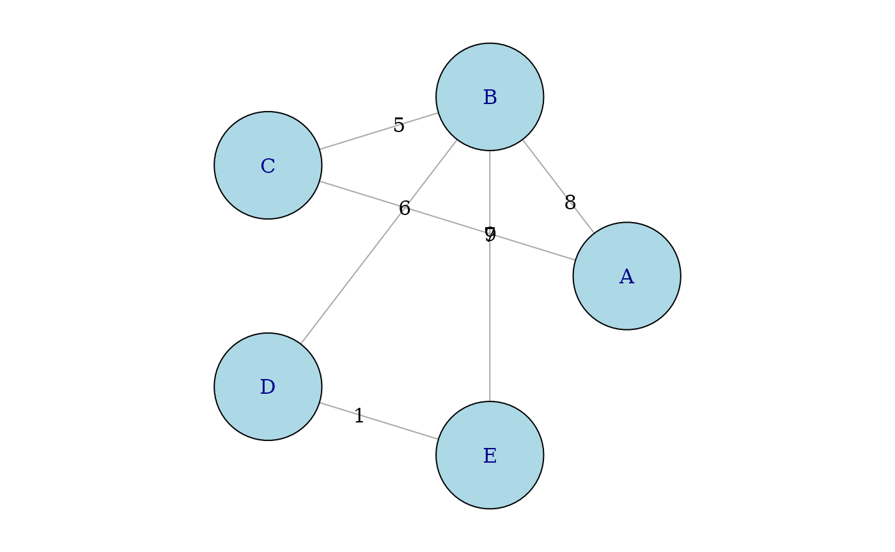

Introduction to PairViz
Catherine B. Hurley and R.W. Oldford
2021-04-08
PairVizIntroduction.RmdPairViz is an R package which provides orderings of objects for visualisation purposes. The problem of constructing an ordering can be regarded as traversing possibly weighted graphs. In this vignette, we focus on graphs and their traversal. Applications to data visualisation are given in accompanying vignettes.
PairViz installation
PairViz is installed from CRAN in the usual way.
install.packages("PairViz")PairViz uses the graph data structure provided by the graph package which is located on the Bioconductor repository rather than CRAN. To install this, use
if (!requireNamespace("graph", quietly = TRUE)){
install.packages("BiocManager")
BiocManager::install("graph")
}In this vignette, we will also show plots of the graph structure, which requires package igraph from CRAN. The following utility function will be helpful:
requireNamespace("igraph")
#> Loading required namespace: igraph
if (!requireNamespace("igraph", quietly = TRUE)){
install.packages("igraph")
}
igplot <- function(g,weights=FALSE,layout=igraph::layout_in_circle,
vertex.size=60, vertex.color="lightblue",...){
g <- igraph::graph_from_graphnel(as(g, "graphNEL"))
op <- par(mar=c(1,1,1,1))
if (weights){
ew <- round(igraph::get.edge.attribute(g,"weight"),3)
igraph::plot.igraph(g,layout=layout,edge.label=ew,vertex.size=vertex.size,vertex.color=vertex.color,...)
}
else
igraph::plot.igraph(g,layout=layout,vertex.size=vertex.size,vertex.color=vertex.color,...)
par(op)
}Alternatively, graphs may be plotted using package Rgraphviz which is installed from Bioconductor:
if (!requireNamespace("Rgraphviz", quietly = TRUE)){
install.packages("BiocManager")
BiocManager::install("Rgraphviz")
}
# For a graph g use
plot(g)Graphs
A graph is a mathematical structure made up of nodes, and edges joining those nodes. We consider only graphs where edges are undirected. In some cases, edges are assigned weights, reflecting some measure of importance.
A complete graph is a graph where there is an edge connecting every pair of nodes. Here are two such complete graphs, k4 with four nodes and k5 with five nodes.
suppressPackageStartupMessages(library(PairViz))
k4 <- mk_complete_graph(4)
k5 <- mk_complete_graph(5)
igplot(k4)
igplot(k5)
Traversing graph edges
We will first construct graph traversals that visit every edge of the graph at least once. The PairViz function eulerian() gives such traversals:
eulerian(k5)
#> [1] "1" "2" "3" "1" "4" "2" "5" "3" "4" "5" "1"Mathematically speaking, an Eulerian path of a graph is a path that visits every edge of a graph exactly once. An Eulerian tour of a graph is an Eulerian path that is closed, i.e. ends up at the starting node. For the graph k5, one such Eulerian tour goes from 1 ->2 -> 3 -> 1 and so on until it ends back at node 1, as given by eulerian(k5). It is well-known that a graph has an Eulerian tour if every node has an even number of edges. This condition holds for a complete graph with an odd number of nodes, such as k5.
Similarly, a graph has an Eulerian path if all but two nodes have an even number of edges. If we remove one edge, say that connecting nodes 1 and 2 from k5, these two nodes have an odd number of edges while other nodes are even.
k5a <- removeEdge("1", "2", k5)
igplot(k5a)
eulerian(k5a)
#> [1] "1" "3" "2" "4" "1" "5" "3" "4" "5" "2" The Eulerian for k5a starts at one of the odd nodes (here “1”) and visits all edges ending at “2”, the other odd node.
Most graphs are not Eulerian, that is they do not meet the conditions for an Eulerian path to exist. The graph k4 for instance, has four nodes and all have three edges. In this case, any path visiting all edges must visit some edges more than once. This is what eulerian(k4) does:
eulerian(k4)
#> [1] "1" "3" "2" "4" "3" "4" "1" "2"If you look closely you will see the edge connecting nodes “3” and “4” is visited twice. An other way to think of it is that extra edges need to be added to a graph so that all but two nodes become even. For k4 only one extra edge is needed, and in the example above that extra edge connects nodes “3” and “4”.
In summary, for any graph, the function eulerian() returns a path visiting all edges at least once. If the graph is Eulerian, the returned path visits each edge exactly once. Otherwise, some edges are visited twice. For more details of this algorithm, see Hurley and Oldford (2010, 2011).
Edge traversal of a weighted graph
First construct a graph with weighted edges.
n <- LETTERS[1:5]
g <- new("graphNEL",nodes=n)
efrom <- n[c(1,1,2,2,2,4)]
eto <- n[c(2:3,3:5,5)]
ew <- c(8,9,5:7,1)
g <- addEdge(efrom, eto, g, ew) To plot the graph use
igplot(g, weights=TRUE,edge.label.color="black")
eulerian(g)
#> [1] "E" "D" "B" "C" "A" "B" "E"As the graph g is weighted, the eulerian algorithm starts at the edge with the lowest weight, and then proceeds to visit every edge, preferring lower weight edges whenever there is a choice of edge to be visited next. If the eulerian() function is called with the option weighted=FALSE, then weights are ignored.
eulerian(g, weighted=FALSE)
#> [1] "A" "B" "D" "E" "B" "C" "A"In this case, the Eulerian path visits edges going next to the first available node in nodes(g).
Edge traversal of a complete graph
For complete graphs, PairViz includes some alternative constructions of Eulerian (or nearly Eulerian) paths.
The function
eseq()uses a recursive algorithm, and forms a path on 1,..,n by appending extra edges on to the tour on 1,…,(n-2). For more details of theeseqalgorithm, see Hurley and Oldford (2011).The function
eseqa()gives a different sequence. For odd n, the tour starts at 1, then takes steps of size 1,2,…,m repeatedly, where m is (n-1)/2. For even n, the path constructed is formed aseseqa(n+1), followed by dropping node n+1. (Note that any permulation of the step sizes 1,2,…,m would do just as well).
Two other functions are
kntour_drop()takes an Euler tour on the complete graph with nodes 1,2,..n as input for odd n, and removes all occurences of n from the sequence. The result is a nearly Eulerian path on the complete graph with n-1 nodes.kntour_add()takes an Euler tour on the complete graph with nodes 1,2,..n as input for odd n, and appends a path joining node n+1 to each of nodes 1,2,…,n . The result is a nearly Eulerian path on the complete graph with n-1 nodes.
Edge traversal of a complete graph via Hamiltonian decompositions
A Hamiltonian path of a graph is a path that visits every node of a graph exactly once. For a general graph, determining whether such a path exists is difficult, and in fact is an NP-hard problem. For a complete graph of n nodes, the path 1,2,…,n is a Hamiltonian path.
Consider a complete graph with an odd number of nodes such as k5.
ew <- rep(1, length(edgeNames(k5)))
s1 <- c(1,5,9,10)
ew[s1]<- 5
ec <- rep("grey40", length(ew))
ec[s1]<- "cyan"
igplot(k5, edge.width=ew, edge.color=ec)
ew[]<- 1
s2 <- c(2,6:8)
ew[s2]<- 5
ec[] <- "grey40"
ec[s2]<- "magenta"
igplot(k5, edge.width=ew, edge.color=ec)The blue hamiltonian path visits the nodes in order 1,2,3,5,4. The pink hamiltonian path visits the nodes in order 1,3,4,2,5. For a complete graph with an odd number of nodes such as k5, it is possible to construct an Eulerian tour by concatenating together a number of Hamiltonians. This construction is known as a Hamiltonian decomposition.
ew[]<- 5
ec[s1]<- "cyan"
s3 <- 3:4
ec[s3]<- "rosybrown1"
igplot(k5, edge.width=ew, edge.color=ec)
igplot(k5, edge.width=ew, edge.color=ec)In the figure above, the light red edge from 4 to 1 connects the two hamiltonians, and the remaining light red edge from 5 to 1 connects the last node of the pink path to the first node from the blue path to complete the tour.
In PairViz, the two hamiltonian paths above are constructed by
hpaths(5)
#> [,1] [,2] [,3] [,4] [,5]
#> [1,] 1 2 3 5 4
#> [2,] 1 3 4 2 5If you want the eulerian composed of the two hamiltonians, use
hpaths(5, matrix=FALSE)
#> [1] 1 2 3 5 4 1 3 4 2 5 1The above constructions produce paths on complete graphs with an even number of nodes which are nearly eulerian. Look at
hpaths(6)
#> [,1] [,2] [,3] [,4] [,5] [,6]
#> [1,] 1 2 6 3 5 4
#> [2,] 2 3 1 4 6 5
#> [3,] 3 4 2 5 1 6
hpaths(6, matrix=FALSE)
#> [1] 1 2 6 3 5 4 2 3 1 4 6 5 3 4 2 5 1 6Each row of the result of hpaths produces a hamiltonian on k6 (a complete graph with 6 nodes). When the hamiltonians are concatenated, all edges on k6 are visited. With a close inspection, we see the edges connecting the rows (here 4-2 and 5-3) are visted twice. There is no need to connect the first node of row 1 to the last node of row 3, as this edge has already been visited.
Other isomorphic decompositions are obtained by supplying the first Hamiltonian as an argument to hpaths. Then all node labels are rearranged accordingly, as in the code snippet below.
hpaths(1:5)
#> [,1] [,2] [,3] [,4] [,5]
#> [1,] 1 2 3 4 5
#> [2,] 1 3 5 2 4Edge traversal of a weighted complete graph via hamiltonian decompositions
Consider the complete graph k7 whose edge weights are given by
set.seed(123)
k7 <- mk_complete_graph(7)
ew <- sample(numEdges(k7),numEdges(k7)) # a vector of edgeweightsThe easiest way to assign weights to edges is to use a distance matrix:
d7 <- matrix(0,7,7)
d7[lower.tri(d7)] <- ew
d7[upper.tri(d7)]<- t(d7)[upper.tri(d7)]
d7
#> [,1] [,2] [,3] [,4] [,5] [,6] [,7]
#> [1,] 0 15 19 14 3 10 2
#> [2,] 15 0 6 11 5 4 21
#> [3,] 19 6 0 9 13 18 8
#> [4,] 14 11 9 0 1 12 20
#> [5,] 3 5 13 1 0 17 7
#> [6,] 10 4 18 12 17 0 16
#> [7,] 2 21 8 20 7 16 0
# or using the shortcut function edge2dist from PairViz
#d7 <- as.matrix(edge2dist(ew))Now d7 is a symmetric matrix of distances, where the values in ew specify the distances in order 1-2, 1-3, …., 1-7, 2-7,…, 3-7, …,6-7.
k7 <- mk_complete_graph(d7)
igplot(k7, weights=TRUE,edge.label.color="black", vertex.label.cex=2,vertex.size=30)
# Unfortunately, plot.igraph does not show graph edge weights automatically, you have to
# input them as above. You might want to check that the igraph
# matches that of ew.
igraph::E(igraph::graph_from_graphnel(k7))
#> + 21/21 edges from 0cb8075 (vertex names):
#> [1] 1--2 1--3 1--4 1--5 1--6 1--7 2--3 2--4 2--5 2--6 2--7 3--4 3--5 3--6 3--7
#> [16] 4--5 4--6 4--7 5--6 5--7 6--7Like hpaths(), the function weighted_hpaths() finds Hamiltonians which when concatenated visit all edges at least once. However weighted_hpaths() uses a greedy algorithm to make the first Hamiltonian low weight with weights increasing for successive Hamiltonians.
weighted_hpaths(d7)
#> [,1] [,2] [,3] [,4] [,5] [,6] [,7]
#> [1,] 6 2 5 4 1 7 3
#> [2,] 6 5 1 2 3 4 7
#> [3,] 6 1 3 5 7 2 4
# this version returns the eulerian
weighted_hpaths(d7, matrix=FALSE)
#> [1] 4 5 7 1 6 2 3 4 1 5 2 7 3 6 4 2 1 3 5 6 7 4We can easily calculate the edge weights and their sum for the first Hamiltonian.
o <- weighted_hpaths(d7, matrix=FALSE)
o1 <- o[1:8] # include the 8th to form the tour
d7e <- dist2edge(d7)
# d7e is a vector giving edge weights in order (1,1)... (1,7), (2,3),.. (2,7) etc
h1weights <- path_weights(d7e, o1) # the edge weights for o1
# the same as
d7[cbind(head(o1,-1), o1[-1])]
#> [1] 1 3 2 8 6 4 12
h1weights
#> [1] 1 3 2 8 6 4 12
sum(h1weights)
#> [1] 36The second and third Hamiltonians have edges whose sums are
o2 <- o[8:15]
sum(path_weights(d7e, o2))
#> [1] 84
o3 <- o[15:22]
sum(path_weights(d7e, o3))
#> [1] 111The weighted_hpaths() function uses order_tsp(), a TSP solver (by default nearest insertion) to come up with the first Hamiltonian. This algorithm uses heuristics, and may not find the overall winner. As the graph has just 7 nodes, it is possible to use brute force evaluation to find the shortest hamiltonian tour.
order_best(d7,cycle=TRUE)
#> [1] 4 5 1 7 3 2 6
order_tsp(d7,cycle=TRUE)
#> [1] 4 5 7 1 6 2 3In this example, we can confirm that order_tsp finds the shortest Hamiltonian tour. As order_best is computationally highly demanding, if you try it for graphs with more that maxexact (defaults to 9) nodes, only a sample of permutations is evaluated.
Comparisions of edge traversals on an unweighted complete graph
Consider the graph k7. At his stage, we have four algorithms for forming Eulerians which do not use weights. These are
e1 <- eseq(7)
e2 <- eseqa(7)
e3 <- eulerian(7) # same path as eulerian(k7, weighted=FALSE)
h1 <- hpaths(7, matrix=FALSE)The plot of eseq(7) is coloured to show its recursive construction. eseq(3) is in tan, the additional edges added for eseq(5) are in blue, while those for eseq(7) are in pink.
The plot of eseqa(7) shows its construction; edges are a distance 1 (in tan), 2 (in blue) and 3 (in pink) apart repeatedly, considering the last node 7 and the first to be a distance 1 apart.
In eulerian(7), edges connecting to node 1 are in tan, edges from nodes 2 and 3 are in blue excepting those connecting node 1, while remaining edges involving nodes 4,5, 6 and 7 only are in pink. This display illustrates that the eulerian algorithm always moves to the lowest available node.
In the plot of hpaths(7) the three concatenated hamiltonians are coloured blue, pink and tan.
From these displays, if you want an eulerian visiting the low numbered nodes first, use eseq() or eulerian(). If you want an Eulerian where visits to a node are spread out, pick eseqa() or hpaths(). And of course, if the Hamiltonian property is important, then hpaths() is the best choice.
Comparisions of edge traversals on an weighted complete graph
We have two different Eulerians for an edge-weighted k7. These are
e4 <- eulerian(d7) # same path as eulerian(k7)
h2 <- weighted_hpaths(d7, matrix=FALSE)which are plotted below. The colouring scheme used here is the same as that for the plots of eulerian(7) and hpaths(7).
Recall that the goal of our traversals of edge-weights graphs was to visit low-weight edges early in the path. To check this, we can find the edges weights for the paths using
d7e <- dist2edge(d7)
path_weights(d7e, e4) # the edge weights for e4
#> [1] 1 3 2 7 5 4 10 14 9 6 11 12 16 8 13 17 18 19 15 21 20
path_weights(d7e, h2) # the edge weights for h2
#> [1] 1 7 2 10 4 6 9 14 3 5 21 8 18 12 11 15 19 13 17 16 20Plotting these, we see that the edge weights for both e4 and h2 increase as the index increases. The path based on Hamiltonians is less successful at ordering the edge weights as it must visit a sequence of Hamiltonians. The edge weights for the first Hamiltonian are in blue, for the second in magenta and the third in tan.
References
C.B. Hurley and R.W. Oldford, Pairwise display of high dimensional information via Eulerian tours and Hamiltonian decompositions. Journal of Computational and Graphical Statistics. 19(10), pp. 861–886, 2010.
C.B. Hurley and R.W. Oldford, Eulerian tour algorithms for data visualization and the PairViz package. Computational Statistics, 26(4), pp 613–633, 2011.